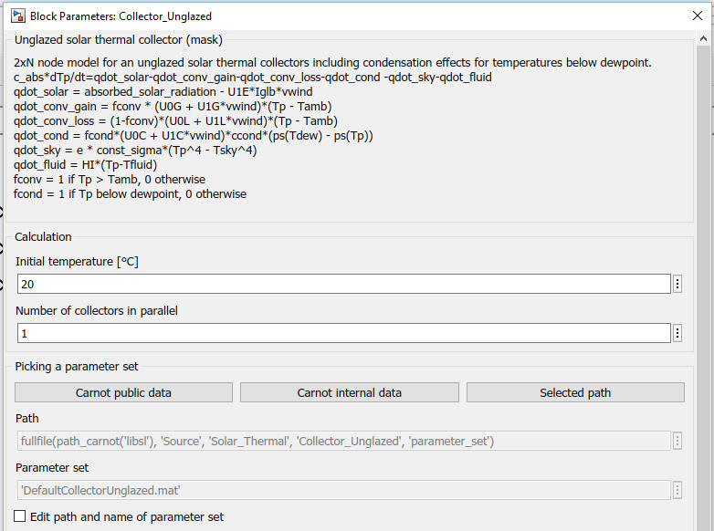

Collector_Unglazed
Path:
CARNOT/Source/Solar_Thermal
Purpose:
Model for an unglazed solar thermal collectors including condensation
effects for temperatures below dewpoint.
Description:
The collector model is a 2 x N multinode model for thermal collectors.
The model is based on parameters obtained from measurement, i.e.
collector test results. The energy balance for every node is a differential
equation, that is calculated in the S-function solarcollector_unglazed.
For the absorber the energy balance is:
c_abs * dTp/dt = qdot_solar - qdot_conv - qdot_cond - qdot_sky - qdot_fluid
qdot_solar = absorbed_solar_radiation - uc1_eta0*Iglb*vwind
qdot_conv = qdot_conv_gain + qdot_conv_loss
qdot_conv_gain = fconv * (Uc0_gain + Uc1_gain * vwind) * (Tplast + fconv * (Tp - Tplast) - Tamb)
qdot_conv_loss = (1 - fconv) * (Uc0_loss + Uc1_loss * vwind) * (Tpo + fconv * (Tp - Tpo) - Tamb)
qdot_cond = fcond * (Uc0_cond + Uc1_cond * vwind) * Ccond * (ps(Tdew) - ps(Tp_cond))
qdot_sky = epsilon * sigma * (Tp4 - Tsky4)
qdot_fluid = hi * (Tp - Tf)
where :
fconv = ( min( Tpo , max(Tamb,Tplast) ) - Tplast ) / ( Tpo - Tplast )
fcond = ( min( Tpo , max(Tdew,Tplast) ) - Tplast ) / (Tpo - Tplast )
Tp_cond = Tplast + fcond * ( Tp - Tplast )
Tpo = 2*Tp - Tplast
The fluid's node is devided into "NODES" nodes. The energy-balance for every node is a differential equation:
c_fluid * dTf/dt = hi * (Tp - Tf)+ mdot * cp / Acoll * (Tlastnode - Tnode)
with
| Symbol | used for | unit |
| Acoll | absorber surface area | m2 |
| Ccond | coefficient for pression in temperature conversion | K/Pa |
| cp | heat capacity of fluid | J/(kg*K) |
| c_abs | heat capacity of absorber per surface | J/(m2*K) |
| c_fluid | heat capacity of fluid per surface | J/(m2*K) |
| epsilon | effective emission coefficient of the absorber surface | - |
| fcond | share of the collector aperture area where condensation takes place | - |
| fconv | share of the collector aperture area where convection takes place | - |
| hi | heat transfer coefficent between absorber and fluid | W/(m2*K) |
| mdot | mass flow rate | kg/s |
| ps | satured vapour pressure of water | Pa |
| qdot_solar | power input per surface from sun | W/m2 |
| sigma | Stefan-Boltzmann constant | W/(m2*K4) |
| Tamb | ambient temperature | K |
| Tdew | dew point temperature | K |
| Tf | fluid temperature | K |
| Tp | absorber plate temperature | K |
| t | time | s |
| uc1_eta0 | wind dependance in optical efficiency | W/(m2*m/s) |
| Uc0_cond | wind speed independant part of the condensation heat transfer coefficient | W/(m2*Pa) |
| Uc1_cond | wind speed dependant part of the convection heat transfer coefficient | W/((m/s)*m2*Pa) |
| Uc0_gain | wind speed independant part of the heat transfer coefficientfor the convective gains | W/(m2*K) |
| Uc1_gain | wind speed dependant part of the heat transfer coefficientfor the convective gains | W/((m/s)*m2*K) |
| Uc0_loss | wind speed independant part of the heat transfer coefficientfor the convective losses | W/(m2*K) |
| Uc1_loss | wind speed dependant part of the heat transfer coefficientfor the convective losses | W/((m/s)*m2*K) |
| vwind | wind speed | m/s |
The collector calculates friction losses in the massflow. This may be
specified in the subsystem
Pressure_Drop_Collector of the collector. Static pressure is calculated
if necessary, i.e. for thermosyphon systems.
See chapter 2.4.1 Pressure Drop
and Massflow Calculations
of the manual 2_Basic_Concepts.
Input:
| WDB | : | Weather Data bus |
| position | : | collector position defined by the Fixed_Surface or Tracked_Surface block |
| THBr | : | return line (inlet) Thermo-Hydraulic Bus of the collector |
Output:
| Cdat | : | Collector Data Bus for logging and display, see create_Cdat |
| Tsol | : | collector temperature in °C |
| THBs | : | flow line (outlet) Thermo-Hydraulic Bus of the collector |
Parameters and Dialog Box:

Examples:
Open the example explorer from the Matlab command window
ExampleBrowser
or load the examples via the CARNOT library.
Literature:
Frank, Elimar: Modellierung unabgedeckter Kollektoren, Dissertation,
Uni Kassel, 2007
Vajen, Klaus; Frank, Elimar: Unverglaste Kollektoren, OTTI Solarthermie,
2009
Characteristics:
| Direct Feedthrough | : | Yes |
| Sample Time | : | Inherited from driving block |
| Vectorized | : | No |